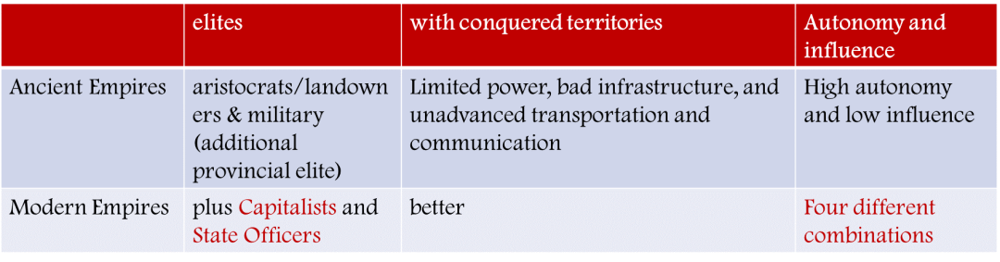
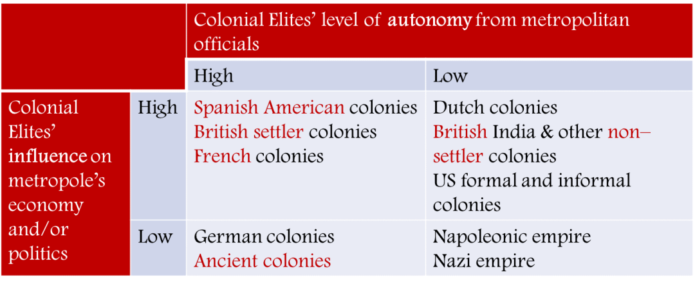
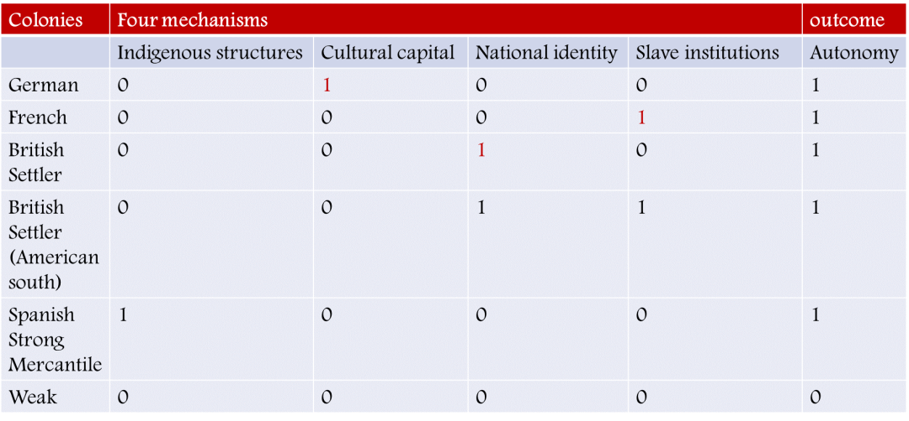
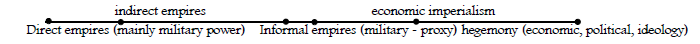
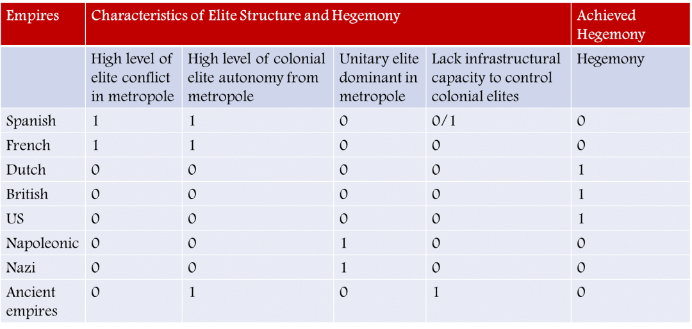

收录于合集
以下文章来源于Politicall理论志 ，作者穷象
 Politicall理论志 .
Politicall理论志 .
搜索“理论志”，发现新学术：七万余社会学人、政治学人、国政学人、政经学人共同关注的学术平台。目前，我们主力追踪国内外社会学、政治学、国际政治与政经济研究新动态。

作品简介
作者： Richard Lachmann，美国历史社会学家、政治社会学家。2021年9月19日因心脏病发作去世，享年65岁。其研究贡献主要集中于精英冲突理论，包括用精英之间的关系解释早期欧洲资本主义的诞生，以及本书中用精英冲突理论分析历史上霸权的兴衰。他的理论对迈克尔曼、查尔斯·蒂利、希达·斯考切波产生影响。
来源： Lachmann, R.(2020). First Class Passengers on a Sinking Ship: Elite Politics and the Decline of Great Powers. Verso Trade.
延伸推荐： Hung, H. F., Clemens, E.S., Mizruchi, M., & Lachmann, R. (2020). Book review symposium: First Class Passengers on a Sinking Ship: Elite Politics and the Decline of Great Powers.
内容提要
本书是美国历史社会学家Lachmann于2020年发表的著作。以西班牙、荷兰、法国、英国等国家为例，本书主要探讨了历史上各个强权国家（Great Powers）中精英结构和各精英之间的关系对这些国家能否成为霸权（Hegemon），以及能否维持霸权的影响。编译集中于本书的第一部分前三章的理论建构部分，各部分划分不完全按照原书章节；以内容回顾的形式向读者简单呈现Lachmann的理论构想，若想完整理解其理论可以自行阅读本书并参阅有关学者对本书展开的研讨。
文章导读
01
美国的衰落与精英的角色
美国的军事和经济强权（Supremacy）正在丧失，在世界范围内的局部战争中屡屡失败；美国公民的教育、医疗和健康正在从世界一流退落；在政治上，美国的政党政治受到精英的把持，似乎越来越难以实现进步的突破或是展开集中的改善下阶层人群状况的项目。这些都是Lachmann的观察，也是他发问的起点：美国霸权衰落了吗？历史上的霸权是如何出现与衰落的？
尽管本书探讨霸权的衰落，但不是以单一整体看待国家的，而是将这些政治组织（Polities）理解成由精英控制的机构的合成。在这个意义上，精英对霸权的存续产生重要影响。尤其当政治组织征服新的土地，创造正式或非正式的帝国，或成为霸权，其内部现存的精英发生转化，或由新征服的土地上出现新生的精英。当精英们开始保护他们在新的土地上的利益，他们将以阻挠（Stymie）竞争对手的方式攫取利益，而这个过程将会削弱帝国中心甚至危及整个帝国的统治。也就是说，强权国家（Great Powers）或霸权（Hegemons）的扩展或衰落是由整体精英结构，精英之间、阶级之间的矛盾转化这些结构的方式所影响的。由此，作者提出本书的研究假设（WorkingHypothesis）：
以事实为依据的（contingent）精英冲突（elite conflict）和结构性转变（structural change）的因果链条决定了现代帝国的生命力（viability），帝国在地缘政治和经济上的地位（standing），帝国能否成为霸权，以及所成为的霸权的形式和存续的时间。
**
**
一个补充性的论断是：历史上的霸权之所以衰落，往往是因为精英们发展了保护自己特殊的、即时的利益的能力，这种能力能够让他们无视国家的边界和霸权的稳定，而依照自己的意愿攫取利益。编译的剩余部分将依照研究假设中的几个关键概念的梳理展开，这个梳理关键概念的过程有助于读者更好地理解作者的逻辑。
02
精英\古代帝国与现代帝国
精英 是一群占据着各自不同的组织机构，具有从非精英身上攫取资源的能力的统治者。精英与马克思主义所描述的统治阶级之间存在重要的差别，其一，在马克思的理论中，统治阶级的基础利益是再生产一个与生产阶级之间的剥削关系，而在作者看来，有一个与之一样重要的利益补充：精英从其竞争者手中维护或是扩展自己权力的利益。其二，精英攫取利益的能力，除了阶级关系，同样重要地来自于各不同精英群体之间的关系。
在这个扩展的意义上，国家的形成是来自于精英之间解决冲突，并联合起来以结合的能力和单一的组织面对来自非精英的挑战。经济、政治、军事和意识形态层面的结构性力量在这里统合一体。一句话，精英是由其占据的能够动员权力结合的组织所定义的，最终这些组织机构的能力是由其在政体——精英们在这个整体之中争夺（jostle）从非精英身上攫取资源的权力——中的结构性位置决定的。
精英存在的形式是现代帝国和古代帝国差别的重要维度，进而我们考察Lachmann的第二个重要概念—— 现代帝国 。现代帝国和古代帝国之间的区别可以由下表概括：
表一 古代帝国与现代帝国的区别

相较古代帝国，现代帝国当中出现了资本家和国家官僚两类新的精英，中心对地方和殖民地的控制能力加强，发展了的交通运输和交流技术也使得中心和地方的联系更紧密。相应地，在古代帝国，殖民地精英面对中心精英具有极强的自主性，但对中心的政治经济影响有限。在区分现代帝国和古代帝国的概念的过程中，作者发展出关于殖民地精英自主性的生成的逻辑，而这一自主性将作为接下来判断霸权形成可能性的重要因素之一。
03
现代帝国的殖民地精英
与古代帝国殖民地精英的高自主性和对中心的有限影响力不同，现代帝国殖民地精英的自主性和对中心的影响力的差异将形成四种不同的现代国家中心- 殖民地精英关系，下表做了一个总结： ****
表二 主要现代帝国殖民地精英的自主性和影响力

其中和古代帝国一样位于表格左下方的德意志帝国是Lachmann首先解释的案例。德意志帝国殖民地的精英来自逃避国内激烈精英竞争的三种精英：贵族、有财产的资产阶级（propertied bourgeoisie）和受教育的中产阶级。在来到殖民地时，他们各自拥有能够争夺殖民地控制的相应资源，在基于专家式民族志知识宣称（claims of ethnographic expertise）的争夺之中，殖民地精英发展出了属于自己的文化资本，以拒绝中心的控制。最终，军事贵族控制了西南非洲，受教育中产阶级控制了萨摩亚以及中国青岛，商人们一败涂地。尽管如此，因为德意志殖民地的经济地位有限，其对中心的影响力也是有限的。
在西班牙和法国的殖民地，国王通过下放殖民地权力的形式换取收益或是要求中心精英的支持，来自中心的各派势力纷纷通过利益交换（a welter of concessions）的形式向殖民地的旅行者征求利益分享，这在起点上削弱了中心对殖民地精英的控制。西班牙的两类殖民地产生了不同的结果，其在美洲的殖民地因为当地相对成熟的社会结构和大量人口建立了自己统一的社会网络，达成了精英的融合；其他的西班牙殖民地则因为原住民的分散和不成熟的社会结构没有发展出自主性。法国在加勒比海的殖民地的特殊性在于，殖民地精英灭绝了当地人口，引进黑奴，建立了完善的奴隶制度。这一制度保障了当地统一的生产体系紧密的社会网络，从而为殖民地精英带来了自主性。
****英国的定居点（settler colonies）（以美洲为代表）中那些前往殖民地的不列颠人数量众多，且并不准备回到祖国，他们在殖民地形成了基于当地社会地位和资本的民族身份，并成功地将当地的官员选任权掌握在自己手中。除此之外，他们对当地人口的灭绝也保证了不会有中心策划的叛乱发生。相比之下，非定居点（以印度为代表）的不列颠人的数量和团结程度有限，难以形成相对于中心的自主性。但无论是西班牙、法国还是英国的两类殖民地，都因其在世界贸易体系中重要的位置，而对中心产生了政治经济上重要的影响力，在表格中，它们都在上方一行。
在此基础上，Lachmann用布尔函数表总结了四种关键因素决定的帝国殖民地精英是否有自主性的因果：
表三 决定现代帝国殖民地精英自主性的布尔函数表

其中四个因素分别是：被殖民者掌控的复杂的当地结构（complex indigenous structures appropriated by colonizers），殖民地精英创建的文化资本（colonial elites create cultural capital），定居者建构了民族身份（settlers create national identity）以及定居者建构了奴隶制（settlers create slave institutions）。表格中的1代表该要素存在，0代表该要素不存在。就这一布尔函数分析而言，当帝国殖民地不具有上述任何一种因素时，殖民地精英就无法获得相对中央的自主性。
04
强权国家和霸权
在总结了现代帝国殖民地精英自主性获得的条件之后，作者将会将它进一步发展成影响 强权国家 形成 霸权 的因素之一。但首先我们要理解Lachmann所说的强权国家和霸权之间的差异。
关于霸权的定义和选择众说纷纭，作者亦给出了定义，但重要的是他对两个因素的强调。在Michael Mann所给出的霸权和帝国的谱系之中，他强调了霸权的葛兰西主义意识形态层面，因而把霸权放在了这个谱系的一端，而另一端是以军事实力维持统治的直接统治帝国：

Michael Mann的谱系
如图所示，谱系的最左端是直接统治帝国，接着是间接统治帝国、非政治帝国（由军事统治向代理人统治滑动）、经济帝国，最后是霸权。军事的影响力从左侧到右侧削减，而意识形态被强调。但Lachmann对自己所定义的霸权的定位则是谱系中被Mann称为非正式帝国的范围。Lachmann进一步指出，这里所称的霸权的两个关键是强制力仍然具有决定性作用，且内部精英的关系产生重要影响。在这个基础上，作者给出了决定强权国家能否成为霸权的布尔函数表：
表四 决定强权国家能否成为（维系）霸权的布尔函数表

其中四个关键因素是高度的精英冲突，殖民地精英的高自主性，中心由单一精英统治以及中心缺乏控制殖民地精英的基础能力。结合前述因果，西班牙和法国中心精英的矛盾以及殖民地精英的高自主性阻碍了两个帝国获得霸权；荷兰、英国和美国被作者视为仅有的成为霸权的帝国；拿破仑帝国和纳粹之所以无法成为霸权，是因为其国内单一精英的统治（下文会进一步评述）；除此之外，古代帝国和处于古代帝国和现代帝国中间的西班牙帝国因为有限的基础设施能力，也限制了霸权的出现。
将这一布尔函数表与第一个布尔函数进行比较，有助于我们理解Lachmann在论证中的一些细节和不足。首先，作者对纳粹和拿破仑帝国失败的解释是有限的，在论及拿破仑帝国时，作者的解释是，拿破仑无法处理由利益分配问题带来的地方精英对中心的不满，最终，他对地方的控制力是有限的。而在解释纳粹的失败时，作者的理论陷入了一定程度的无力。最后作者也感慨，若纳粹帝国留存，也许是唯一能够化解精英矛盾的帝国。第二个值得观察的差异在于，在前述有关殖民地精英自主性的探讨中，作者将英国的两类殖民地精英按照是否有自主性区分开来，而在决定霸权形成的布尔函数表中，作者对英国的定位则是殖民地精英缺乏自主性。这里的差异包含在作者对英国霸权形成、危机和进一步维系的历史解释之中，读者若感兴趣可以自己参阅原书。
第三个对此布尔函数表的观察来自编者自己。一个显而易见的观察是，作者在论述殖民地精英自主性的生成时，曾经指涉了包括中心精英的冲突以及基础交通信息能力两个因素（尽管未列入第一个布尔函数表），而在决定霸权形成的第二个布尔函数表中，这两个要素重新被作为影响因素列入表格。这一因果关系似乎在这里陷入一些交杂，而作者未能对此给出有益的解析。实际上，作者选择的第四个解释要素——基础设施能力对控制的影响——本身就是一个和核心的精英关系理论较为疏远的维度，故而，一个对作者的历史比较分析有益的理解是，解释霸权兴衰的要素选择逻辑并没有定量研究的因果那样精准严密，重要的是作者所建构的理论能够给历史上的霸权兴衰一个合意的阐释，在众多的历史之中梳理出一个清晰的脉络。
05
霸权的兴起、维持和衰落
尽管如上一节所言，作者的因果逻辑存在一些未解释的疏漏，但对于霸权的兴衰，作者依靠这四个关键因素给出了有力的统合。作者在接下来的章节进一步指出，霸权的衰落产生于其内部： 霸权的扩展最终会引发霸权帝国内部精英矛盾的增长，重新创造出布尔函数表中的要素一，进而埋葬霸权自己。 资本主义时代的霸权之中，当资本家进一步发展其维持、扩大其利益的能力，进而击碎原本维持霸权的精英合作基础，且这一新的精英矛盾无法被统合进霸权体系内部，霸权就会走向衰落。
在本书的第二部分，作者以美国为案例分析了从上世纪七十年代开始的漫长的衰落，这一过程具体体现为地方精英和中心精英关系的崩解，市民社会与政党联系的消失，金融精英的快速扩张、对金融化的推动和产业精英的衰败，军事精英在扩张中逐步变得独立、分裂、自大却又问题重重（以高精尖武器的统治为代表）。但需要警惕的一点是，霸权在危机之中对精英关系的整理可能为其带来新的发展和维系，英国霸权的二次崛起就是一例。在霸权再起的过程中，战争很可能成为其重新梳理整合精英关系的契机，对于衰落中的美国来说，这样一个机会求之不得。应当理解，Lachmann本书对于读者最大的启示不在于实证上确认美国霸权的衰落与否，而在于其理论建构部分对精英关系和霸权兴衰的理解，对历史上霸权命运的解释。因而编者在这里仅整理理论部分，以飨读者。
编译｜穷象
审核｜林陌声
终审｜李致宪
排版｜刘吉文
本文来源于Politicall理论志公众号
文章观点不代表本平台观点